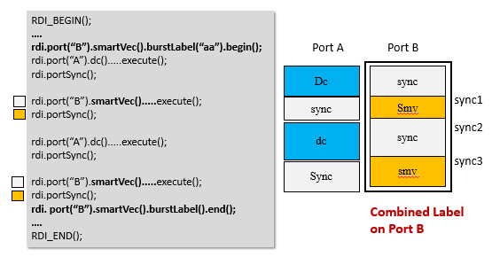

burstLabel()
Combines multiple smart vector commands into one burst label. The commands are surrounded by burstLabel().begin()/burstLabel().end().
The usage of burstlabel() converts several single labels to one common label. Thus the granularity of pass/fail results is limited to the common burstlabel.
Accordingly the commands expectBit(), expectData(), and enPassFail() cannot be used with an id (smartVec(id)) inside burstlabel().
To insert compare vectors, use writeVec(), fillVec(), and writePat().
This command can also work together with enPassFail() to specify that
the burst label requires pass/fail results. See Example 3.
Syntax
burstLabel(const string &labelName); burstLabel(const string &labelName,TA::MD5_OPTION);
Parameter |
Description |
|---|---|
labelName |
The specified name of the big label. The label name can be as long as 128 characters at maximum. |
TA::MD5_OPTION |
The option which defines to use an MD5 postfix string or not in the label name. |
Option |
Description |
|---|---|
TA::MD5_ON |
With an MD5 postfix string in the label name. This is the default value. With MD5_ON, the maximum length of a valid "targetLabelName" in the generated pattern name is 74. |
TA::MD5_OFF |
Withou an MD5 postfix string in the label name. With MD5_OFF, the maximum length of a valid "targetLabelName" in the generated pattern name is 111. |
Examples
Example 1
...
RDI_BEGIN();
rdi.smartVec().burstLabel("burstlabel").begin();
rdi.smartVec().pin("DATA1").writeVec("01",2).execute();
rdi.smartVec().pin("DATA3").fillBit(1,8,4).execute();
rdi.smartVec().pin("DATA7").writeData(0x54,8,4).execute();
rdi.smartVec().burstLabel().end();
RDI_END();
// Allow repeat() and wait() in burstLabel() in SmartRDI 2.3.1
RDI_BEGIN();
rdi.smartVec().burstLabel("burstlabel").begin();
rdi.smartVec().pin("DATA1").writeVec("01",2).repeat(2).execute();
rdi.wait(1 ms);
rdi.smartVec().pin("DATA3").fillBit(1,8,4).repeat(3).execute();
rdi.wait(1 ms);
rdi.smartVec().pin("DATA7").writeData(0x54,8,4).repeat(4).execute();
rdi.smartVec().burstLabel().end();
RDI_END();
// Allow to get the Pass-Fail result with burstLabel() in SmartRDI 2.3.1
RDI_BEGIN();
rdi.smartVec("pf_result").burstLabel("burstlabel").enPassFail().begin();
rdi.wait(1 ms);
rdi.smartVec().pin("DATA3"). writeData(0x54,8,4)
.pin("DATA4"). expectData(0x54,8,4)
.repeat(3).execute();
rdi.wait(1 ms);
rdi.smartVec().pin("DATA5"). writeData(0x55,8,24)
.pin("DATA6"). expectData(0x55,8,24)
.repeat(3).execute();
rdi.smartVec().burstLabel().end();
RDI_END();
...
int passfail_result=rdi.id("pf_result").getPassFail();Example 2
burstLabel("abc") // The default is with an MD5 postfix
burstLabel("abc",TA::MD5_ON) // With an MD5 postfix
burstLabel("abc",TA::MD5_OFF) // Without an MD5 postfixExample 3
RDI_BEGIN();
...
rdi.smartVec("pf").burstLabel("abc").enPassFail().begin();
rdi.smartVec()...
...
rdi.smartVec().burstLabel().end();
...
RDI_END();
Rdi.id("pf").getPassFail();Example 4
Since SmartRDI 2.4.4, the combination of run-time accesses for
the VTT mode within a burstLabel().begin()/burstLabel().end()
block is
supported.
rdi.smartVec().vecEditMode(TA::VTT);
rdi.runTimeVal("rtData",rtData);
RDI_BEGIN();
rdi.smartVec().burstLabel("abc").begin();
for(int k=0;k<64;k++) // 64 vector segments to edit in run time
{
rdi.smartVec().pin("DATA1").writeData("rtData",16,0).vecLength(160).execute();
}
rdi.smartVec().burstLabel().end();
RDI_END();There should be no instructions like MACT, RPTV, JSUB inside the burst label.
Example 5
Before SmartRDI 2.4.5, the
rdi.smartVec().burstLabel().begin()/rdi.smartVec().burstLabel().end() block
can only be used for a single port.
SmartRDI 2.4.5 supports the combination of multiple
parallel execute() commands for specified ports by
rdi.port().smartVec().burstLabel(). It also supports the combined usage with
portSync(). See example below.

Functional changes
- Introduced in SmartRDI 2.3.0
- SmartRDI 2.3.2: repeat() and wait() inside the burstLabel().begin()/burstLabel().end() block.
- SmartRDI 2.4.0: A label name with or without an MD5 postfix option.
- SmartRDI 2.4.2: enPassFail() in the command line with burstLable().
- SmartRDI 2.4.4: Supports the combination of run-time accesses for the VTT mode within a burstLabel().begin()/burstLabel().end() block.
- SmartRDI 2.4.5: burstLabel() supports multiple ports, and can be used in combination with portSync().